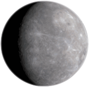

Mercury
Contents
Position
- Mercury is closest planet to the Sun and the smallest one
- Spinning around the Sun takes only 87.97 Earth days - the shortest spinnig time in Solar System
- Mercury is an inferior (interior) planet to the Earth
- Planet can usually be seen in dusk (after sunset on western horizon) or dawn (before sunrize on eastern horizon), in twilight. It happens due to its proximity to the Sun
History
The planet was named after Roman god Mercurius. He was the god of commerce ans messenger of gods, mediator between gods and mortals. In Greek mythology he is kind of equal to Hermes
Surface
It is similar to the Moon (very cratered terrestrial) planet. No geological activity happened for billions of years
Atmosphere
Mercury has no atmosphere, because its gravity is too weak to retain any gases. But there is an exosphere of hydrogen, helium, oxygen, sodium, calcium, potassium and others. Exosphere is chemically unstable. Helium and hydrogen come with solar wind. Generally, the whole chemical composition is affected by solar wind.
Chemical compounds
Messenger found high proportions of calcium, helium, hydroxide, magnesium, oxygen, potassium, silicon and sodium. These elements either are brought by solar wind, or are sputtered from planet's ground due to solar winds' powers. Water vapor is present due to comets that strike its surface.
Water vapor appears out of hydrogen from solar wind and oxygen from rock, and sublimation from reservoirs of water ice in permanently shadowed polar craters. High amounts of water-related ions like o+, oh−, h3o+ were detected.
Weather
- Surface is incredibly heated: 100 k (−173 °c; −280 °f) at night to 700 k (427 °c; 800 °f) during day across equatorial regions
- Polar regions are constantly below 180 k (−93 °c; −136 °f)
Has no natural satellites
VLA and GSSR researches confirmed that there is ice on the polars of Mercury. It is possible because deep craters are never really exposed to sunlight. So, they become a cold trap, where ice accumulate. There is approximately 1015 kg of ice on polars
Physical properties
Basic properties
- Diameter of 4880 km (like USA)
The planet has 3 main layers: core (85% of all size),
mantle,
crust. Like the Earth,
but out planet's core takes only 55% of all its size
No tectonic plates
Iron core is slowly cooling, causing the whole
planet to shrink. Mercury has already shrinked for 4.4 miles
Magnetic field
Mercury has extremely powerful magnetic field. During Mariner 10 trip in 1973 the fact that Earth's magnetic field is 1.1% of Mercury;s one. Actually, it equals to 300 nT (nanoTesla) on equator. Existence of such a magnetic field is explained by planet's liquid iron-rich core.
Orbit & rotation

Mercury's axis has the smallest tilt of all solar system's planets (about 1⁄30 degree).
orbital eccentritet
Orbital eccentritet ε is largest of all known objects in solar system. At perihelion, its distance to sun is 66% of one in aphelion. Distance from the Sun ranges from 4×106 to 70×106 km. Complex variations of surface temperature are possible due to such an orbit.
Spacecrafts
- 2 spacecrafts has visited Mercury
- Mariner 10 (NASA) in 1974 and 1975
- 1st spacecraft to explore Mercury
- 1st spacecraft to use gravity of one planet to reach another
- 1st spacecraft to return data on a logn-period comet
- 1st spacecraft to explore 2 planets in 1 mission
- 1st spacecraft to use a gravity assist to change its direction
- 1st spacecraft to return to its target after initial encounter
- 1st probe to use solar wind as a major mean of spacecraft orientation during flight
- Messenger (NASA), launched in 2004, orbited around Mercury for over 4000 times in 4 years before running out of energy and crashong into the planet's surface on .
- Explored surface ingredients, revealed geological history, discobered details about its internal magnetic field, verified polar water-ice existance.
- Bepicolombo spacecraft is planned to arrive to Mercury in .
Other
| crates | famous humanitarians |
| chains of crates | radioobservatories |
| scarps | explorators |
| furrows | architecture (buildings, etc) |
| valleys | abandoned old settlements (Angkor) |